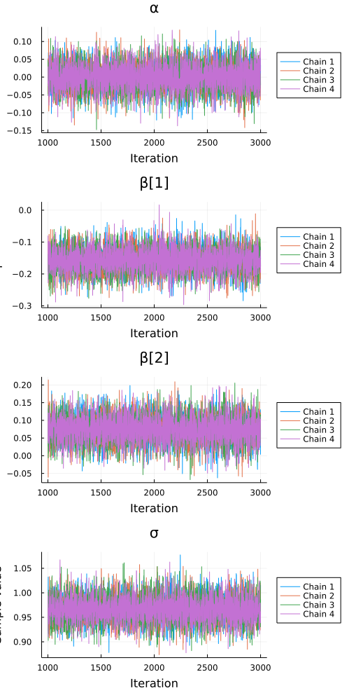
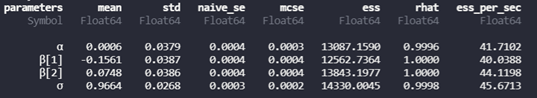
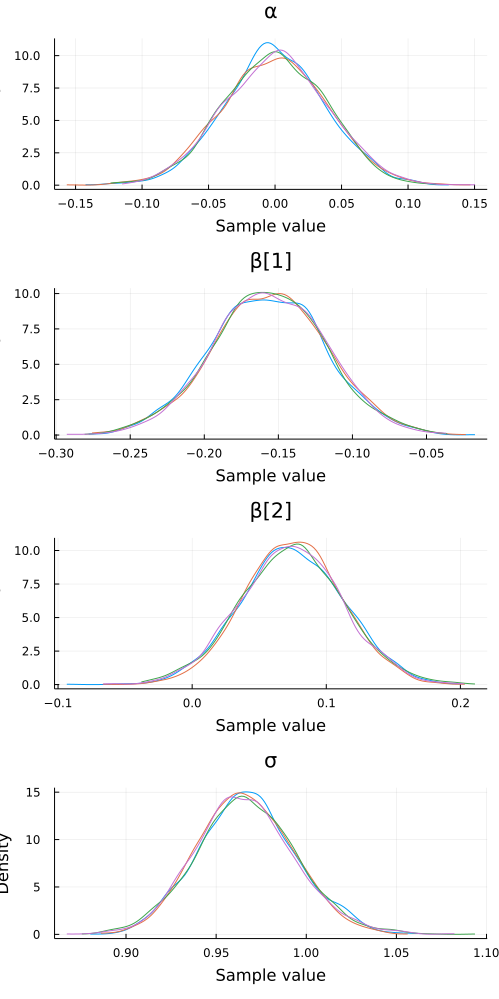
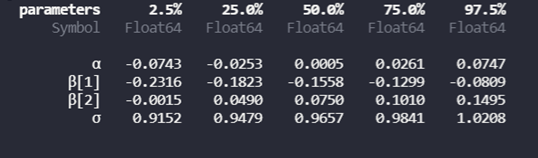

Use Turing.jl to fit Bayesian regressions
In earlier posts, I have demonstrated how to fit and interpret the output of simple Gaussian GLM’s using both R and Julia. However, the field of ecology (and other fields, e.g. economics, health sciences) all seem to be shifting their focus and attention to Bayesian data analysis (BDA), over the traditional frequentest approaches (e.g. null-hypothesis significance testing). I encourage anyone who is interested in the long-standing debate of using frequentist vs bayesian methods to consult people more knowledgeable than me (e.g. here, here, and here).
Very simply, Bayesian methods differ from traditional frequentist methods in two primary ways:
Priors: Frequentist approaches assume that all of the information we can derive must come from the underlying data (e.g. model parameters). Bayesian methods allow us to incorporate other information (e.g. literature), or an uninformed guess, about what the model parameters could be, called a prior. Where we don’t have any information, we can fall back into non-informative priors, such as the normal (Gaussian) distribution.
Posterior: A Bayesian approach allows us to calculate a distribution of possible models parameters based on the actual data and the prior information we have. Because we are calculating a distribution of model parameters, we can also quantify uncertainty around these estimates. This allows us to make probabilistic statements such as: given the model we fit, the data and the prior information we have about the topic, there is an Z% chance that the effect of covariate X increases Y by so much… This is a bit wordy, but it will hopefully be more clear with an example.
My potentially oversimplified summary of Bayesian vs frequentist approaches is that Bayesian methods aim to generate a probability distribution of possible model paramters, while frequentist methods are geared towards trying to estimate a single best estimate of the model parameters.
In today’s blogpost, I want to demonstrate the basics of fitting, evaluating and interpreting a simple Bayesian linear regression in Julia. I am by no means an expert in Bayesian analysis, so if any experts are reading this and have any pointers, please let me know. This post will be purposely kept as simple as possible to serve as a light and breezy introduction to an otherwise challenging and complex statistical modelling toolbox.
TuringGLM.jl in R that doesn’t seem to have an easy fix (at least not for me), which I use to write and host my blogposts. As such, I will be showing some screenshots of the required output when I run the analysis in Julia.To fit a Bayesian regression model in Julia, we are going to take advantage of the amazing Turing.jl package in Julia. Turing.jl is a general-purpose probabilistic programming package that allows Julia users to fit Bayesian models using standard Julia syntax. For more details, please consult the Turing.jl homepage. In fact, we are actually going to use another package, TuringGLM.jl to specify our models using simple coding syntax, and it will return an instantiated Turing model without us having to lift a finger, so to speak. The syntax of Turing.jl is very similar to using brms in R (insert ref), which makes the transition between languages easy.
# Load the package manager
using Pkg
# # Install required packages (once-off)
# Pkg.add("GLM") # General linear models (GLM)
# Pkg.add("StatsModels") # Perform likelihood-ratio test
# Pkg.add("DataFrames") # Manipulating data structures (Julia's version of 'dplyr')
# Pkg.add("StatsBase") # Basic statistical functions (e.g. mean, stddev)
# Pkg.add("Statistics") # More basic statistical functions
# Pkg.add("Distributions") # Fit basic statistical distributions
# Pkg.add("Plots") # Plot figures
# Pkg.add("StatsPlots") # Grouped box-plots recipe
# Pkg.add("Turing") # Dependency for probabilistic probability calculations
# Pkg.add("TuringGLM") # Bayesian GLM's
# # Load required packages (every new session)
using GLM # General linear models (GLM)
using StatsModels # Perform likelihood-ratio test
using DataFrames # Manipulating data structures (Julia's version of 'dplyr')
using StatsBase # Basic statistical functions (e.g. mean, stddev)
using Statistics # More basic statistical functions
using Distributions # Fit basic statistical distributions
using Plots # Plot figures
using StatsPlots # Grouped box-plots recipe
using Turing # Dependency for probabilistic probability calculations
# using TuringGLM # Fit Bayesian GLM's
using RCall # Port the 'Salamanders' dataset from R's 'glmmTMB' package Let’s read in the salamanders dataset that is built-in to the glmmTMB package in R (insert ref). The salamanders dataset consists of counts (abundances) of a number of different salamander species from 23 different sites. There are a number of site (e.g. the amount of cover objects in the stream cover) and sampling covariates in the dataset (e.g. the day of the year each sampling event occurred DOY). Each site was sampled on 4 separate occasions, meaning that there is a hierarchical structure in the data, however, let’s not worry about that for today (we will come back to this in a later blogpost).
# Load in the dataset
salamanders = RCall.rcopy(R"glmmTMB::Salamanders")644×9 DataFrame
Row │ site mined cover sample DOP Wtemp DOY sp ⋯
│ Cat… Cat… Float64 Int64 Float64 Float64 Float64 Ca ⋯
─────┼──────────────────────────────────────────────────────────────────────────
1 │ VF-1 yes -1.44232 1 -0.595683 -1.22938 -1.497 GP ⋯
2 │ VF-2 yes 0.29841 1 -0.595683 0.0847653 -1.497 GP
3 │ VF-3 yes 0.397881 1 -1.19137 1.01418 -1.29447 GP
4 │ R-1 no -0.447616 1 0.0 -3.02336 -2.71222 GP
5 │ R-2 no 0.596821 1 0.595683 -0.144345 -0.68686 GP ⋯
6 │ R-3 no 1.34285 1 0.595683 -0.0146601 -0.68686 GP
7 │ R-4 no -0.944966 1 -0.595683 -0.446944 -0.97041 GP
8 │ R-5 no 0.497351 1 -0.595683 -0.602567 -0.97041 GP
⋮ │ ⋮ ⋮ ⋮ ⋮ ⋮ ⋮ ⋮ ⋮ ⋱
638 │ VF-6 yes -0.397881 4 -0.0915999 0.510846 1.46002 DF ⋯
639 │ R-12 no 0.795761 4 -0.0915999 -0.188417 1.25748 DF
640 │ VF-7 yes -0.696291 4 -0.0915999 2.05658 1.41951 DF
641 │ VF-9 yes 0.447616 4 -0.0915999 0.768469 1.46002 DF
642 │ VF-8 yes -0.696291 4 -0.0915999 -1.73416 1.46002 DF ⋯
643 │ VF-10 yes -0.795761 4 -0.0915999 0.308428 1.41951 DF
644 │ VF-11 yes -0.646556 4 -0.0915999 -0.722065 1.46002 DF
2 columns and 629 rows omittedAs I briefly mentioned above, we can take advantage of the TuringGLM.jl package to specify our model. TuringGLM.jl uses a simple coding syntax, that is consistent with other Julia packages such as StatsModels.jl and MixedModels.jl, and it will return an instantiated Turing.jl model without us having to do too much work.
Let’s say that we want to model water temperature (Wtemp) as a function of how much of the stream area is covered by objects (e.g. rocks, woody debris) (cover) and the day of the year that sampling took place (DOY). This was not the intent of the original study - I am using this as a case-study example only. We are not interested in the actual results here, rather, pay attention to the process and familiarizing yourself with the code and how to interpret the model fits.
There are two components to specifying a Bayesian model. The first component is the likelihood, which is basically the same as selecting which family to pick using a standard GLM (e.g. Gaussian, Poisson, ect…). The second component is specifying the priors (e.g. prior information from the literature or a pilot study), if we have any.
The model is specified using using the @formula macro and then specifying the dependent variable followed by a tilde ~ then the independent variables separated by a plus sign +, or * if an interaction term is required.
# Step #1: Specify the model formula
# - Response variable: Wtemp (water temperature)
# - Predictor variable(s): cover (vegetation cover) + DOY (day of year)
fm = @formula(Wtemp ~ cover + DOY)
# Step 2: Fit the model
# - The first argument is the formula object we specified above
# - The second argument is the dataset containing the response and predictor variables
# - Because we are specifying a linear regression, we do not need to specify any
# likelihood distribution (e.g. Poisson, Bernoulli, ect...)
model = TuringGLM.turing_model(fm, salamanders)Notice that we haven’t given the model any information other than the raw data. In other words, we have not specified any priors. When this happens, TuringGLM.jl will take care of us, and specify what it calls “…state-of-the-art default priors, based on the literature and the Stan community…”.
The next step is to draw samples from the posterior distribution. This allows us to calculate a distribution for each of the model parameters given the underlying data. The way we do this is to use the sample function from Turing.jl. There is a lot of fancy stuff going on in the background to draw the samples. You can take a look here if you want to dive into the nitty-gritty.
For today, we are going to keep it simple and use the default method, the No U-turn sampler, otherwise known as NUTS, to sample the posterior.
# Extract parameter estimates using `sample` from 'Turing.jl'
# - Use No U-Turn Sampleer (NUTS) with 2000 samples
# - Sample from 4 Markov chains using multiple threads MCMCThreads()
n_samples = 2000
results = Turing.sample(model, Turing.NUTS(), MCMCThreads(), n_samples, 4)The next step is to perform some checks that the model fit was okay. This is roughly equivalent to performing residual diagnostics in a frequentist modelling framework (e.g. QQplots, fitted vs residual plots, ect…). There are two essential checks we must perform:
Let’s take a look at our trace plots using the built-in traceplot function in MCMCChains.jl:
MCMCChains.traceplot(results, legend = :outerright)
Inspecting the plots indicates that the chains are well mixed (i.e. all the different coloured squiggly lines are plotted over one another) and that the chains have converged on a certain range for each model parameter (i.e. the range of the y-axis spread is relatively consistent across the range of the x-axis). Happy days.
Now let’s calculate R-hat:
StatsBase.summarystats(results)

All our R-hat values for the different model parameters fall within the bounds of 0.99 and 1.01. Thank goodness. We can be quite happy that our model appears to have converged and the parameter estimates that we obtain appear to be stable.
The last step is to perform model inference. To do this, we can calculate summary statistics from the posterior distributions of the different model parameters.
The first thing to do here is to plot the posterior distributions of the different model parameters.
StatsPlots.plot(results, seriestype = :mixeddensity)
The two plots that we are interested in are the ones labelled B[1] (which is the slope of the first X covariate we specified in the model formula, namely: \(\beta\)[cover]) and B[2] (which represents the slope for the second X covariate we specified in the model formula, namely: \(\beta\)[DOY]). The posterior distribution for B[1] is centered around -0.16, and ranges between -0.04 and about 0.30. Roughly, this implies that the average change in water temperature associated with a one unit change in cover is a decrease of 0.15 degrees. Similarly, the posterior distribution for B[2] is centered around 0.08, and ranges between -0.03 and about 0.3. Roughly, this implies that the average change in water temperature associated with a one unit change in DOY is a increase of about 0.08 degrees.
We can calculate some more informative summary statistics that will allow us to summarise and interpret our results more succinctly. To do this, we can calculate credible intervals. These are basically what most ecologists interpet as confidence intervals using a frequentist modelling approach. There is an important distinction between the two definitions, however. For example, a 95% confidence interval tells us that if the experiment were repeated 100 times, we would reasonably expect the best parameter estimate to fall within the bounds of the confidence interval calculated 95% of times. This is not the same as a credible interval, which allows us to make a probabilistic statement about the treatment effect, as discussed above. Let’s illustrate with our example.
# Calculate parameter estimates and credible intervals
# - Read the 95% CI as the 97.5 - 2.5% columns
Statistics.quantile(results)
The 95% credible interval for \(\beta\)[cover] is -0.08 to -0.23. This means that there is a 95% chance that the change in water temperature associated with a one unit increase in cover is somewhere between a 0.08 to 0.23 degree decrease. Note that we know the effect is a decrease because of the negative sign of the parameter estimates and intervals. Also note, at no point have we ever calculated a p-value. We can infer that the cover variable was statistically significant, whatever that means, because the credible interval for \(\beta\)[cover] did not include 0 (which would indicate no effect on water temperature).
Similarly, the 95% credible interval for \(\beta\)[DOY] is 0.0003 to 0.14. This means that there is a 95% chance that the change in water temperature associated with a one unit increase in DOY is somewhere between a 0.0004 to 0.14 degree increase.
Let’s now compare the Bayesian linear regression model we fitted above with an ordinary least squares (OLS) model.
ols = lm(@formula(Wtemp ~ cover + DOY), salamanders)StatsModels.TableRegressionModel{LinearModel{GLM.LmResp{Vector{Float64}}, GLM.DensePredChol{Float64, CholeskyPivoted{Float64, Matrix{Float64}}}}, Matrix{Float64}}
Wtemp ~ 1 + cover + DOY
Coefficients:
───────────────────────────────────────────────────────────────────────────────
Coef. Std. Error t Pr(>|t|) Lower 95% Upper 95%
───────────────────────────────────────────────────────────────────────────────
(Intercept) 2.71979e-12 0.0380319 0.00 1.0000 -0.0746821 0.0746821
cover -0.156278 0.0388947 -4.02 <1e-04 -0.232654 -0.0799011
DOY 0.0748419 0.0382482 1.96 0.0508 -0.00026502 0.149949
───────────────────────────────────────────────────────────────────────────────As we touched on above, the estimates obtained from OLS indicate a single best estimate of the covariates effect on Y. We can see here that the \(\beta\)[cover] = -0.15, with a 95% confidence interval of -0.08 to -0.23. These estimates are basically identical to the Bayesian estimates derived above (\(\beta\)[cover] = -0.15, with a 95% credible interval of -0.08 to -0.23). Given that we didn’t provide any priors to our Bayesian model, this isn’t a huge surprise.
Let’s leave it there for today. Bayesian data analysis is not easy, particularly for people like me who have been using frequentist modelling approaches for so long. However, I hope that today you have seen the power of using Bayesian models in your research. The real joy of this approach is the probabalistic statements that we can make when performing model inference and not relying on a binary p-value to assess statistical significance, but rather, we focus on estimating the magnitude of the effect. In later posts, we will cover more advanced Bayesian modelling strategies, including how to plot predictions from the model. Any feedback would be much appreciated.